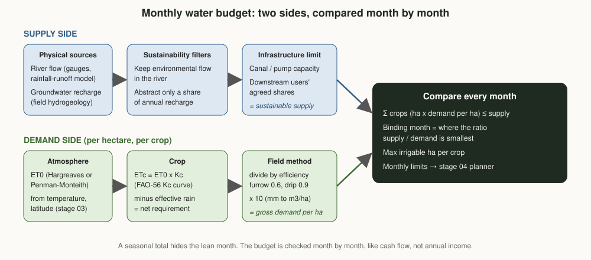

02. Water Resource Assessment
How much water can each planning cluster use, in each month, without harming the river, the aquifer or downstream users? And how many hectares of which crop can that water irrigate?
Position in the chain
This stage
Sustainable monthly supply versus crop irrigation demand, per planning cluster and season.
Why this stage matters
Think of a household whose income arrives unevenly through the year. The annual total can look comfortable while one lean month still leaves the family short. Water works the same way. In the Amhara highlands most rain falls in the Kiremt months (June to September), and irrigation happens in the dry months when rivers are lowest. So the lean month, not the seasonal total, decides how many hectares can be irrigated.
No plan without water
Stage 04 cannot promise a buyer 300 tonnes of irrigated wheat if February flows support only half the area.
Sustainable by design
Environmental flows stay in the river and only a share of groundwater recharge is used, so this season's plan does not undermine the next.
Honest about uncertainty
Satellites show surface water and vegetation, but cannot measure groundwater by themselves. Every estimate carries a confidence label.
Key questions
- How much water can each cluster use sustainably in each month of the dry and Belg seasons?
- How much water does each candidate crop need per hectare, month by month?
- Which month limits irrigation, and how many hectares of each crop does the water support?
- Where would storage, wells or efficient irrigation unlock the most suitable land?
Domain model
The WaterBudget is the contract with stage 04. It carries twelve monthly supply values and per-hectare demand curves, so the planner can check every month instead of one seasonal number.

| Term | Kind | Meaning |
|---|---|---|
| WaterSource | Entity | A river diversion, set of shallow wells, borehole or pond, with its sustainability rules and confidence level. |
| Sustainable supply | Derived value | Monthly volume after keeping environmental flow, limiting groundwater to a share of recharge and applying pump or canal capacity. |
| CropCoefficients | Value object | FAO-56 crop coefficient curve (Kc) and growth-stage lengths. |
| IrrigatedCropPlan | Value object | A crop, its planting date and irrigation method (which sets efficiency). |
| Gross irrigation demand | Derived value | Water to abstract per hectare per month: (ETc minus effective rain) divided by efficiency. |
| WaterBudget | Value object (output) | Monthly supply, demand per crop, binding month, maximum area per crop and overall confidence. |
Methods

Demand: FAO-56 crop water requirement
- ET0, the water a reference grass would use, from temperature and latitude (Hargreaves, FAO-56 eq. 52). Penman-Monteith replaces it where weather stations allow.
- ETc = ET0 × Kc, using the crop coefficient curve across growth stages.
- Effective rain (USDA-SCS method) is subtracted, only for days the crop is in the field.
- Gross demand = net requirement ÷ efficiency (furrow about 0.6, drip about 0.9).
Supply: what can be used sustainably
- Rivers: monthly flow from gauges or a rainfall-runoff model, minus an environmental flow reserve, capped by diversion capacity.
- Groundwater: a share of annual recharge, which must come from field hydrogeology (well tests, water levels, geophysics). Satellite data alone cannot establish it.
- Ponds and reservoirs: storage carried from the rains into the dry season, minus evaporation.
- Existing users: agreed shares of downstream users and water-user associations are reserved first.
Amhara-specific considerations
Strongly seasonal rainfall
Most rain falls from June to September. Rivers that flood in August can shrink to a trickle by March, exactly when dry-season wheat and vegetables need the most water.
Lake Tana sub-basin
The lake and its tributaries, and the floodplains around it, are a natural focus for irrigation. Any abstraction must respect the lake, its wetlands and downstream users in the Abay basin.
Shallow groundwater on the plains
Lake-shore plains with shallow water tables support hand-dug wells and motor pumps, often for onion and vegetables. Unregulated pumping can lower water tables, so recharge-based limits matter.
Existing schemes and associations
Medium and small-scale irrigation schemes and water-user associations already allocate water. The budget reserves their shares and works with them rather than around them.
Highland catchment degradation
Erosion on steep land raises sediment loads, which fills ponds and canals. Catchment conservation (bunds, terraces, area closures) protects the water supply itself.
Belg and dry-season windows
Belg rains (February to May) support some areas; elsewhere irrigation runs from November to May. Season choice changes both demand and the binding month.
Data sources
| Layer | Source | Resolution | Used for | Confidence |
|---|---|---|---|---|
| Rainfall | CHIRPS v2, local stations | ~5 km, points | Effective rain, runoff modelling | Modelled |
| Temperature | ERA5-Land, TerraClimate, stations | ~4 to 9 km | ET0 (Hargreaves, Penman-Monteith) | Modelled |
| Streamflow | National hydrological gauging stations; global flood reanalysis where ungauged | points, ~5 km | Monthly river supply | Measured where gauged |
| Surface water extent | JRC Global Surface Water, Sentinel-1 and Sentinel-2 water masks | 10 to 30 m | Ponds, reservoirs, seasonal water | Indicative |
| Catchments and streams | Copernicus DEM, HydroSHEDS | 30 to 90 m | Catchment delineation, diversion points | Modelled |
| Groundwater storage trend | GRACE / GRACE-FO | ~300 km | Regional context only | Indicative |
| Wells and boreholes | Regional water bureau records, field inventory | points | Water levels, yields, recharge estimates | Measured |
| Crop water use check | Sentinel-2 based evapotranspiration, field measurements | 10 to 30 m | Validating demand estimates | Modelled |
Demo: a synthetic lake-shore cluster
A made-up cluster at 11.8° N and 1800 m, with a small river diversion (30% of flow kept as environmental flow, 450,000 m³/month canal capacity) and shallow wells (40% of recharge). It plans dry-season irrigated wheat (planted mid-November) and onion (planted in January), both with furrow irrigation. No real gauge, well or farmer data.
Monthly irrigation demand versus sustainable supply
Best mix under monthly limits: 43.9 ha wheat + 58.4 ha onion. Thousand m³ per month, water year from October.
Show as table
| Month | Supply | Wheat | Onion | Spare |
|---|---|---|---|---|
| Oct | 490,000 | 0 | 0 | 490,000 |
| Nov | 490,000 | 14,170 | 0 | 475,830 |
| Dec | 404,000 | 63,707 | 0 | 340,293 |
| Jan | 334,000 | 114,526 | 100,087 | 119,387 |
| Feb | 264,000 | 119,208 | 144,792 | 0 |
| Mar | 222,000 | 54,694 | 167,306 | 0 |
| Apr | 201,000 | 0 | 151,555 | 49,445 |
| May | 250,000 | 0 | 70,143 | 179,857 |
| Jun to Sep | 490,000 each | 0 | 0 | 490,000 each |
Each crop alone
| Crop | Gross demand | Max area | Limited by |
|---|---|---|---|
| Irrigated wheat (130 days) | 834 mm | 97.3 ha | February |
| Onion (150 days) | 1,085 mm | 77.5 ha | April |
Why monthly limits matter
A proposed mix of 70 ha wheat + 40 ha onion uses about 1.0 million m³ over November to May, against 2.2 million m³ available. On a seasonal basis it looks easy. Month by month it fails: February is short, when wheat is at peak demand, onion is growing fast and the river is low. The optimiser instead picks 43.9 ha wheat and 58.4 ha onion, with February and March fully used.
Outputs and the contract with other stages
Monthly water budgets
Per cluster and season: sustainable supply, demand per hectare per crop, binding month and maximum area, for stage 04.
Irrigation opportunity map
Suitable land (stage 01) within reach of water, ranked by the extra hectares each intervention would unlock.
Investment signals
Where storage, wells, canal lining or drip kits would relieve the binding month, for stage 06 and partners.
Example record sent to stage 04 (synthetic, abbreviated):
{
"cluster_id": "CLUSTER-DEMO-A",
"season": "dry",
"confidence": "indicative",
"supply_m3": [334000, 264000, 222000, 201000, 250000, 490000, ...],
"demand_m3_per_ha": {
"irrigated_wheat": [2607, 2714, 1245, 0, 0, 0, 0, 0, 0, 0, 323, 1450],
"onion": [1713, 2478, 2864, 2594, 1201, 0, 0, 0, 0, 0, 0, 0]
},
"binding_month": {"irrigated_wheat": "Feb", "onion": "Apr"},
"max_area_ha": {"irrigated_wheat": 97.3, "onion": 77.5}
}Validation, uncertainty and indicators
How estimates are checked
- Flow measurements at diversion points in the dry season, compared with modelled flows
- Monthly water-level monitoring in a sample of wells to detect over-abstraction
- Hargreaves ET0 checked against Penman-Monteith where a full weather station exists
- Actual water applied (stage 07 records) compared with estimated demand
Indicators (KPIs)
- Water productivity: kg of crop per m³ applied
- Share of production plans within the monthly sustainable budget (target 100%)
- Dry-season well water levels stable year on year
- Share of supply estimates at "measured" or "modelled" confidence
Roadmap
Methodology v0.1
- Domain model, FAO-56 demand, sustainable supply
- Monthly budget and allocation check
- Synthetic demo and tests
- Status: done
Pilot inventory
- Map rivers, diversions, wells and ponds in the pilot woreda
- Collect gauge records and well data
- Meet water-user associations and record existing shares
Model and measure
- Rainfall-runoff model for ungauged streams
- Dry-season flow measurements
- Recharge estimates with hydrogeologists
- Penman-Monteith where data allow
Integrate
- Monthly constraints in the stage 04 planner
- Irrigation opportunity map
- Season-by-season recalibration
Code on this branch
src/water_res/domain.py domain model (sources, crop plans, budget contract)
src/water_res/hydrology.py Ra, Hargreaves ET0, FAO-56 Kc curve, effective rainfall, irrigation demand
src/water_res/budget.py sustainable supply, monthly budget, binding month, allocation check
src/demo.py synthetic lake-shore cluster demo (writes assets/demo-water-budget.json)
tests/test_water.py unit tests (includes FAO-56 Example 8 for radiation)git switch stage/02-water-resources
python3 src/demo.py
python3 tests/test_water.py